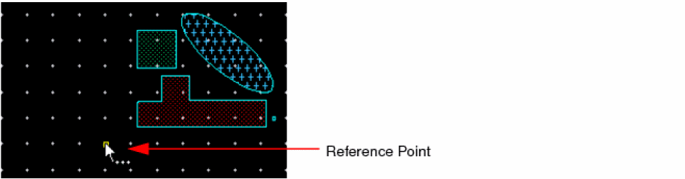
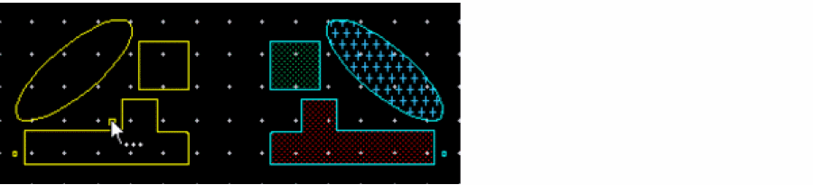
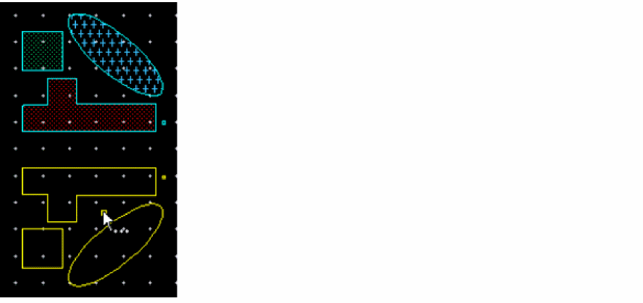
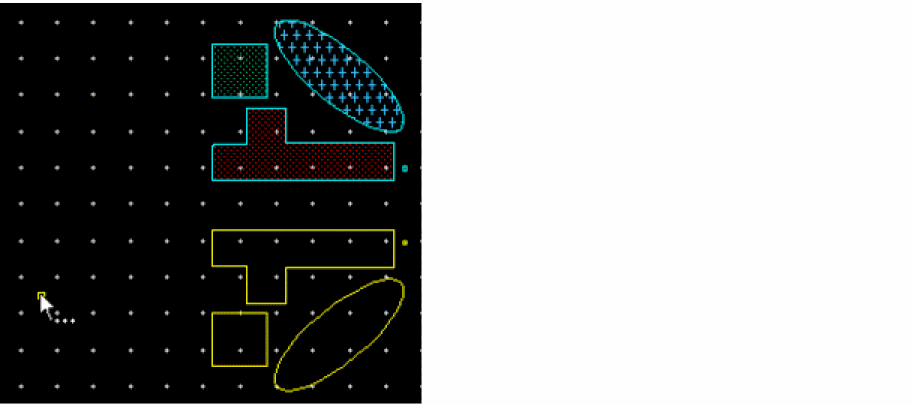

Flipping an Object by Specifying a Reference Point on Canvas
To flip the selected objects by specifying a reference point on the canvas:
- In the layout window, select the objects on the canvas that you want to flip.
- Choose Edit – Flip – Flip.
-
Press
F3to open the Flip form. -
Ensure the Specify reference and direction check box is not selected in the form.
In this mode, all the options on the form are disabled. -
Click a reference point on the canvas for flipping the objects.
The coordinates of the clicked reference point populate in the X,Y reference point fields of the Flip form. The ghost image of the resultant flip operation displays. The location of the ghost image moves as you move the pointer on the canvas. The following figure below shows the selected objects and the reference point.
Assuming that the selected objects are in quadrant 2 on the canvas:-
If the pointer is in quadrant 1 relative to the selected objects, the ghost image is also displayed in quadrant 1.
-
If the pointer is in quadrant 3 relative to the selected objects, the ghost image is also displayed in quadrant 3.
- If the pointer is in quadrant 2, no ghost image is displayed.
-
If the pointer is in quadrant 4, nothing changes. If a ghost image is displayed in quadrant 1 or 4, it continues to be displayed.
-
If the pointer is in quadrant 1 relative to the selected objects, the ghost image is also displayed in quadrant 1.
-
Click on the canvas to select the required ghost image.
The selected objects are flipped and the command ends.
Related Topics
Return to top